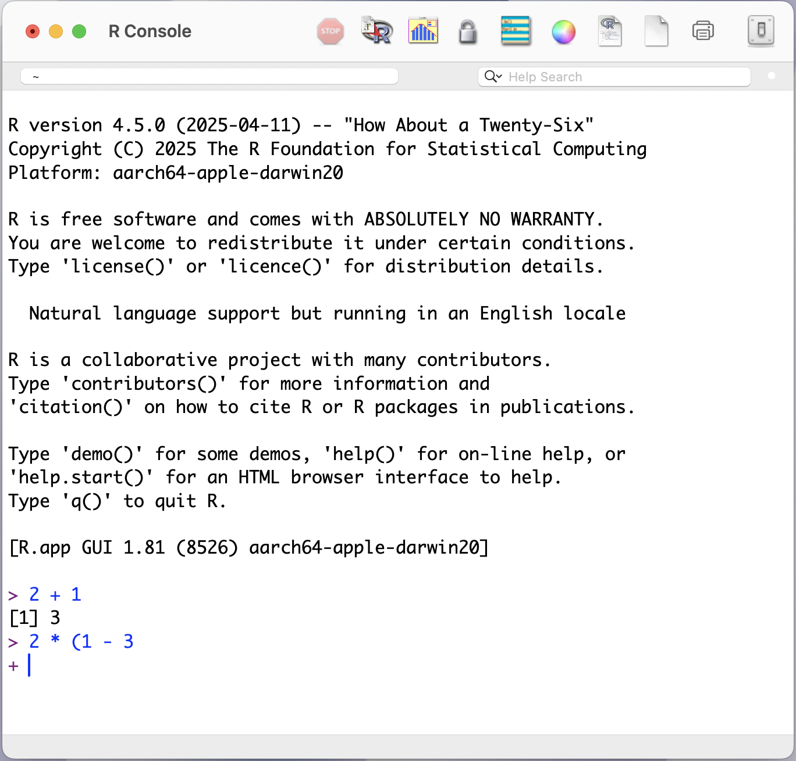
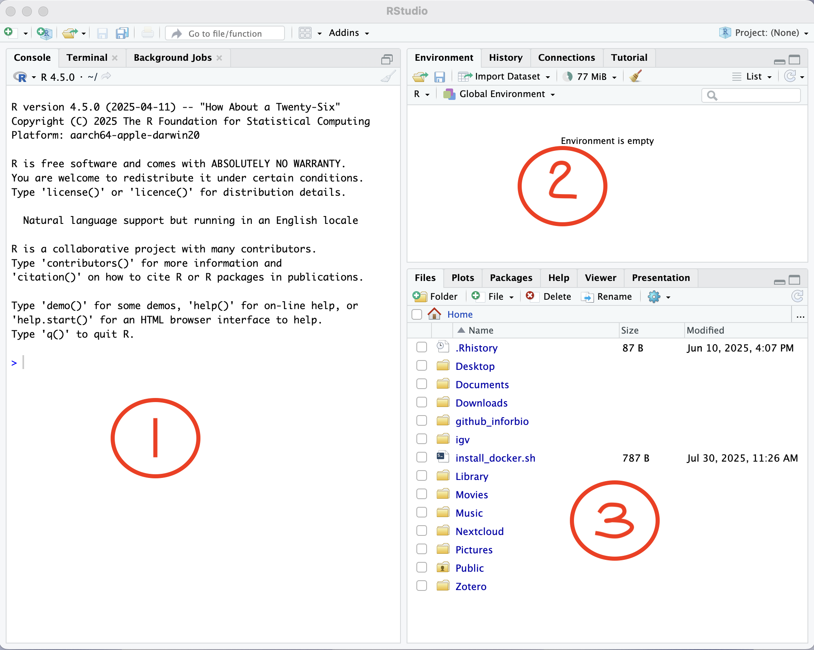
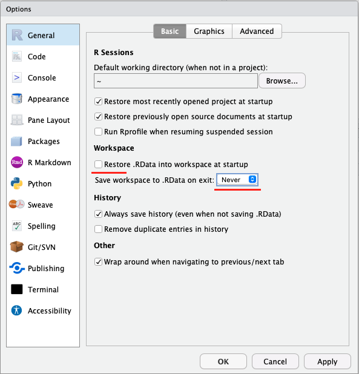
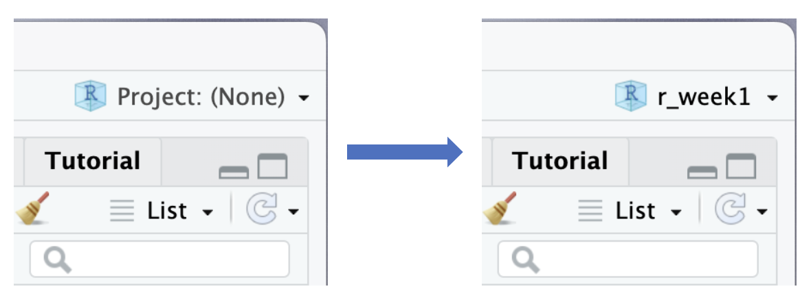
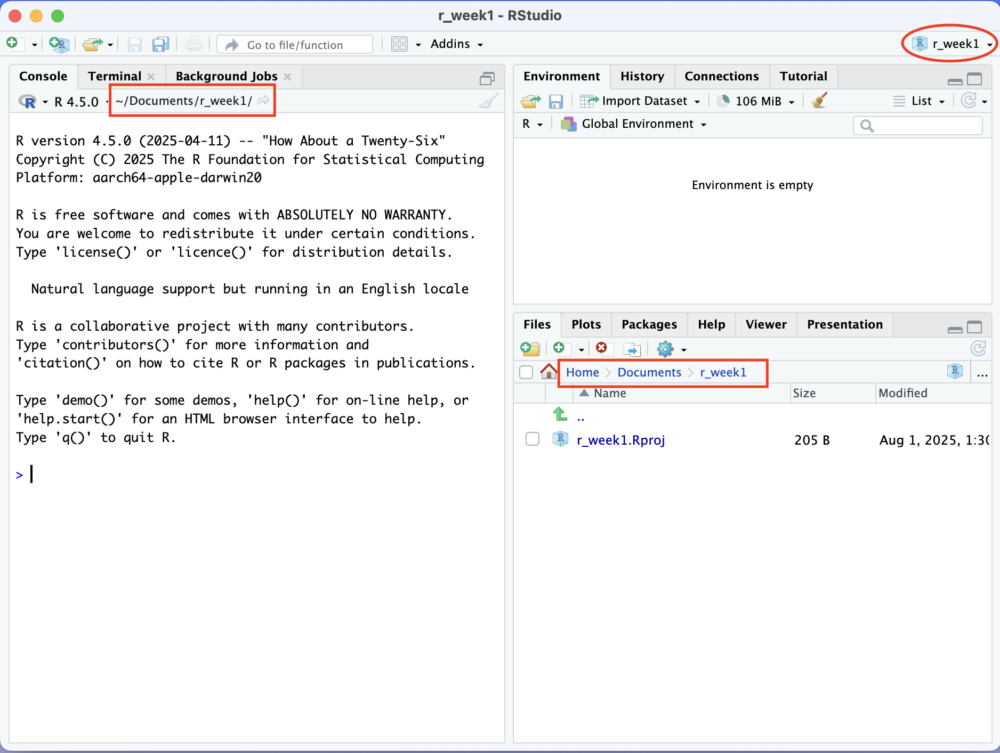
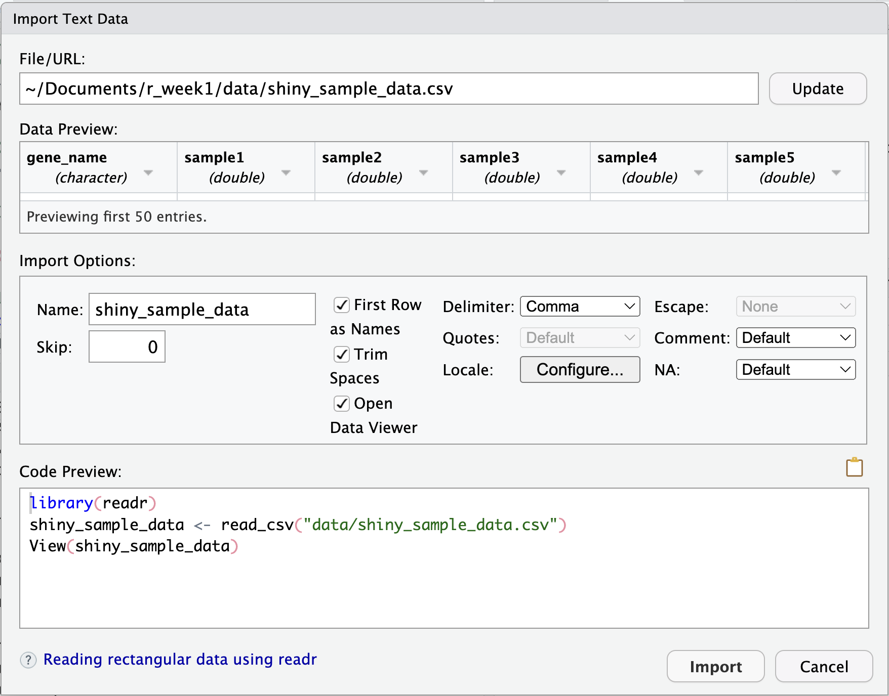
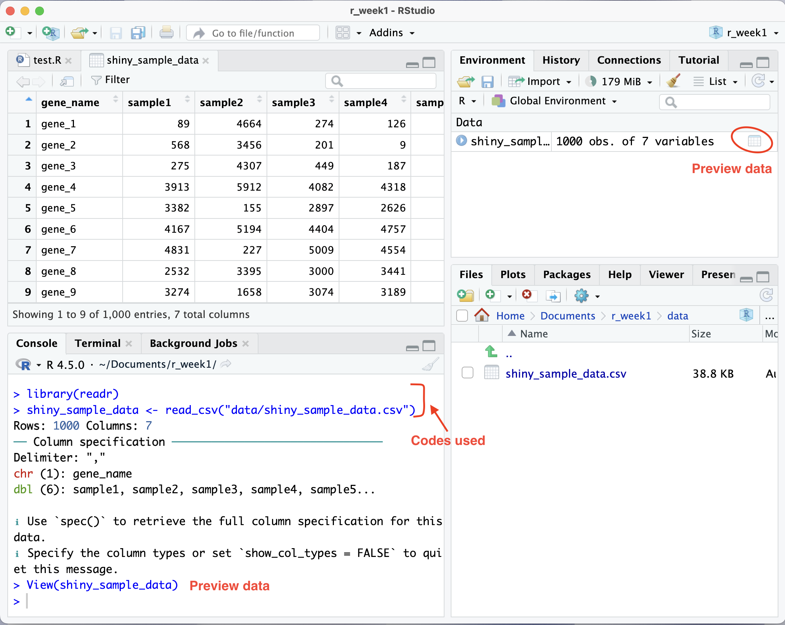

Kickstart with R:
Your Gateway to Data Science
IOC-R Week 1
Unlock the Power of Your Data with 
Welcome to R!
R is a programming language and software environment designed for statistical computing and data analysis.
Why R?
- Biologist friendly!
- Free and open-source
- Supported by a huge community
What you can do with R?
- Analyze your data
- Visualize your findings
- Automate your workflow
- Share reproducible research
The official website: https://www.r-project.org
The R Console

In the R console:
>(The prompt): R is ready for your command. Type your code and press Enter to run it.[1](Output): This indicates the start of an output line.+(Continuation): R is waiting for you to finish your command. You can either finish the command or press Esc to cancel it.
Rstudio
Rstudio Login
If you use the RStudio Server, you need to connect to your account first.
Rstudio IDE
Integrated Development Environment (IDE)

- Console: enter and execute R commands interactively.
- Environment/History: tracks your variables and past commands.
- Files/Plots/Packages: managing your files, viewing graphs, or installing tools.
Rstudio cheat sheet (and French version)
Getting Started
- Open your RStudio.
- Create an R script: File -> New File -> R Script or click . (Will appeared at 4)
- Write your codes in the script.
- Save script: Cmd/Ctrl + S, name your script.
- Execute code: Click or press Cmd/Ctrl + Enter
Getting Started
Copy paste following codes into your script and save the script as test.R.
- Basic codes (commands):
# Use `#` to write a comment (line) in your script
# Math with R:
2 + 2 # Yes, R can do math!
sqrt(16) # Square root.
# Create a variable:
x <- 5 # Now x is 5. You can reuse it!
x + 1
# Inspect your environment:
## Look at the "Environment" pane, do you see your x?
ls()
# Load a package:
library(stats)
# Get help of a function (documentation):
?mean
# Quit RStudio properly
q()Some Configuration
Go to Tools -> Global Options…
Under the General tab:
- Uncheck the box “Restore .RData…”
- Set “Save workspace to .RData on exit” to Never.
Then click “Apply”.

Some Configuration
Go to Tools -> Global Options…
- Under the Code tab:
In the Display panel, check the box “Use rainbow parentheses”
Then click “Apply”.
Some Configuration
Go to Tools -> Global Options…
- Under the Appearance tab:
You can select a theme for you RStudio, e.g., the “Cobalt” for a dark theme.
- Under the Pane Layout tab:
You can arrange the four panels as you prefer.
In addition, click “Add Column” lets you open an extra “Source” code column, allowing you to view your scripts side by side!
Then click “Apply”.

Setting Up an R Project
Create an R Project
An R project keeps everything for your project in one working directory and helps R to know where to look for your files.
- In RStudio, go to File -> New Project
- Choose New Directory and click New Project
- Set a folder name (e.g.,
r_week1) and select where to save it. - Click Create Project
You’ll notice RStudio restarts, and now your project is set up!

Create an R Project
A Well Organized Project Folder
- Tree structure:
r_week1 # Your working directory
├── r_week1.Rproj # The R project configuration file
├── README.md # A short introduction of the project
├── data # Raw data files
│ └── raw_count.tsv
├── scripts # Your R code files
│ └── 01-analysis.R
│ └── 02-figures.R
└── outputs # Results, e.g., graphs, reports- Managing Files (via the File pane):
- To create a new folder: click . The folder will be created in the current directory.
- To move a file or folder: check the box next to its name, click and then select Move… to choose a new destination.
- Create
dataandscriptsfolders inside your working directory. - Move the
test.Rinto thescriptsfolder of your working directory.
Understanding File Paths
How to tell your computer where to find the test.R?
- Absolute path, starts from the very top of your computer’s folder. E.g.:
- Linux/Mac:
/Users/lijiao/Documents/r_week1/scripts/test.R - Windows:
C:\Users\lijiao\Documents\r_week1\scripts\test.R
- Linux/Mac:
Understanding File Paths
A path tells your computer where to find files/folders.
- Relative path, starts from your working directory (folder). E.g.:
- Linux/Mac:
scripts/test.R - Windows:
scripts\test.R
- Linux/Mac:
Where Are You?
r_week1 # Your working directory
├── r_week1.Rproj # The R project configuration file
├── data # Raw data files
└── scripts # Your R code files
└── test.RWhat are the absolute and relative paths of the folder “data”?
absolute path: /Users/lijiao/Documents/r_week1/data
relative path: data
Data Import & Export
Import Data
- Supported formats:
- text files (.txt, .csv, etc.)
- Excel files
- data from other softwares (e.g.: SAS)
- Click-button methods:
- From menu bar: File -> Import Dataset -> Select the format -> Choose your file
- From the “Environment” pane: click Import Dataset -> Select the format -> Choose your file
- From the “Files” pane: Navigate to your file location -> Click the file and select Import Dataset (need the {readr} package)

Import Data
Importing your first file: shiny_sample_data.csv
- Right click the link and select “Download Linked File As…” (or the equivalent on your system).
- Save the file into the
datafolder of the R projectr_week1 - Import the data with one of the three click-button ways.
Think before you import the data
- How do you want to name the imported data?
- Is there a header?
- What is the column separator?
- Which sign is used as the decimal?
Once you’ve checked these settings and the preview looks correct, click Import.
Import Data
Export Data
We’ll use the built-in iris dataset and save it in the CSV format using the write_csv() function from the {readr} package.
head(iris) # show the first lines of the dataset
View(iris) # preview the whole dataset
?write_csv # get help of the functionGoal: Save the built-in iris dataset as a CSV file named iris_export.csv inside the outputs folder of the project.
- Create the
outputsfolder. - Type the following command and execute it:
Go to the Files pane, can you find the saved file?
(We’ll talk about other formats in the future!)
Need Some Help?
Different Solutions
- Google it!
- Forums: Stack Overflow, Cirad(francophone), etc.
- Ask/discuss your question via Slack.
- AI tools (like ChatGPT or Gemini) can be very helpful resourcesüòâ, but be careful of false answers! (More details in session 6)
Key points:
- Be specific.
- Provide context: code, error, etc.
- Always verify.
- Protect sensitive data.
PDF of Slides
To save the slides as a PDF:
- Open the presentation in a web browser
- Press “e” to enable PDF export mode
- Press Cmd/Ctrl + P to open the in-browser print dialog.
- Change layout to “Landscape”.
- Select “save as PDF” as the printer option and save the file.
After saving, press “e” again to return to presentation mode.
Let’s Practice !
Today’s Goals
- Get familiar with the RStudio
- Create an R project in RStudio
- Import data file into RStudio
- Export data from RStudio